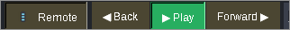
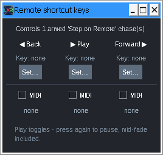
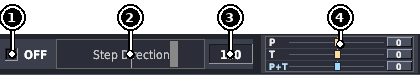
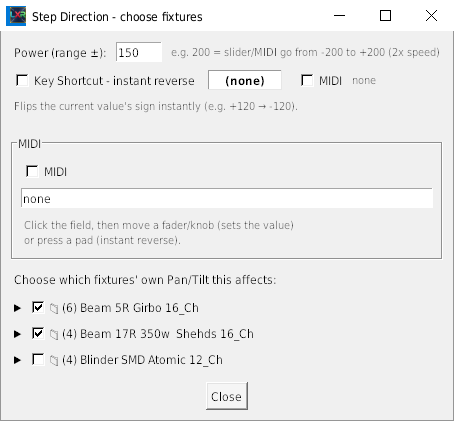
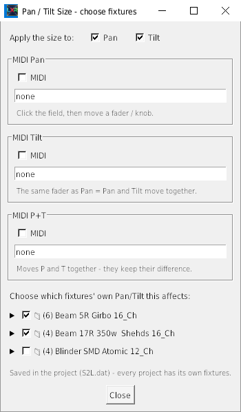
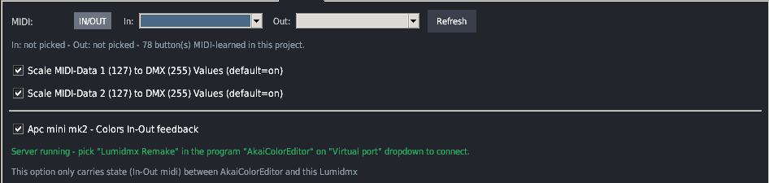
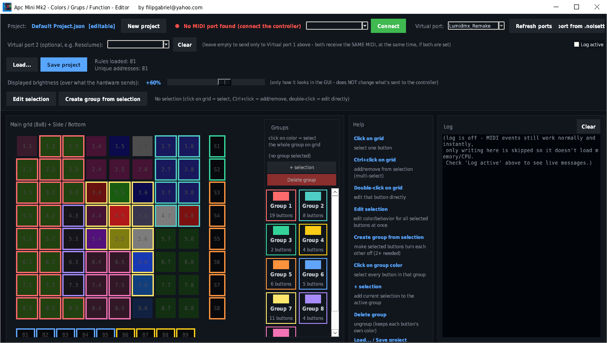
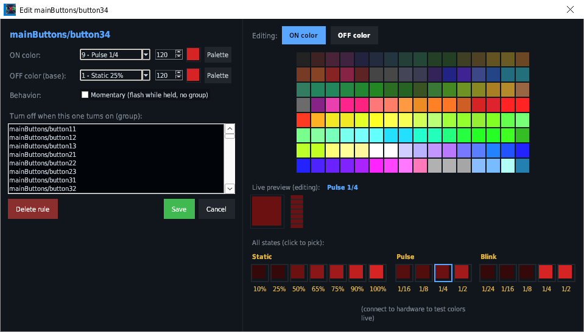

For: FullPlayer
The lights can be played by hand: the remote player steps the chases, keys of the keyboard and MIDI controllers start buttons and move sliders. This page explains the remote player; the keys and the MIDI of a button are in Object Propertys, those of a slider in Sliders, the MIDI ports in MIDI.

Remote pressed: Back, Play and Forward next to it. Play is green and pressed: the group plays.
Remote on the toolbar shows or hides Back, Play and Forward; the program remembers it for the next start. They drive together, as one group, the buttons set to Step on Remote (the Trigger of Object Propertys; such a button shows STEP).

The keys and the MIDI of the remote player, none set yet. At the top: how many Step on Remote buttons are in the group now.
Open it from Options > Remote shortcut keys, or with a right click on Back, Play or Forward.
The keys and the MIDI of the remote player are settings of the program: they work in every project.
The Live Panel can be used from a phone on the same Wi-Fi, in its browser: see Web Remote (the phone).
Two controls of the top bar change the movements while they play - by hand, or from faders of a MIDI controller.

| 1 | OFF / ON - turns Step Direction on. Off, the movements play at their own speed. |
| 2 | Step Direction - drag left or right: the speed and the direction of the Step on Remote movements of the fixtures chosen. Right in the middle (0) they stand still; to the left they run backward. Right-click: its settings. |
| 3 | The value now, in % of the normal speed (100 = as programmed, -100 = as fast, backward). |
| 4 | Pan / Tilt Size - three rows: P (Pan), T (Tilt), P+T (both). Each from -100 to +100: 0 = the movement as programmed, -100 = held at its centre, +100 = twice as big. Press on a row and drag; click the value at its end: back to 0. Right-click: its settings. |
P, T and P+T always start at 0 when the program starts or a project is opened (a project saved with them at -100 would otherwise hold every move at its centre); the fixtures, Pan / Tilt and the MIDI faders are kept.
P+T moves P and T by the same amount and they keep their difference. Pan / Tilt Size makes the movements bigger or smaller round their own centre; setOffset moves them - the two work together.

| Setting | What it does |
|---|---|
| Power (range ±) | How far the control goes: 150 = from -150 to +150 (1.5 times the speed). 200 = twice the speed. |
| Key Shortcut - instant reverse | A key that turns the direction over at once (+120 becomes -120). Click the field, then press the key. MIDI next to it: the same from a pad. |
| MIDI | Tick it, click the field, then move a fader or knob of the controller: it sets the value (0 - 64 - 127 = minus - 0 - plus). A pad pressed instead reverses. |
| the fixtures | Whose Pan / Tilt it affects: a Step on Remote chase is driven only if its steps touch the Pan / Tilt of a fixture ticked here. |

| Setting | What it does |
|---|---|
| Apply the size to: Pan, Tilt | Which of the two it changes. |
| MIDI Pan, MIDI Tilt, MIDI P+T | A fader for each row: tick MIDI, click the field, move the fader. The same fader on Pan and Tilt moves both. |
| the fixtures | Whose movements are made bigger or smaller. |
The choices of both windows are kept in the S2L.dat of the project: every project has its own fixtures. Copies of both controls can be shown in the Monitor.
With an Akai APC mini mk2, the pads can show the state of the buttons in colours: a button that plays lights its pad, the others of its group go dark, and so on. Turn it on in Setup & Patch > MIDI:

Tick Apc mini mk2 - Colors In-Out feedback. The editor opens; the line under the box says when the link works (Server running). This option only carries the state (In-Out MIDI) between the editor and LumiDMX Remake; it cannot be used together with loopMIDI In / Out.

| Part | What it does |
|---|---|
| Project | The editable colour project (.json): New project, Load..., Save project; Import from .noisette... turns a Chataigne project into one, once. |
| the controller | Its port, Connect (red: no MIDI port found - connect the controller), Refresh ports. |
| Virtual port | Where every press of the controller goes: Lumidmx_Remake. Virtual port 2 (optional, e.g. Resolume) gets the same MIDI at the same time. |
| Displayed brightness | Only how the colours look in the window; it does not change what goes to the controller. |
| Main grid (8x8) + Side / Bottom | The pads, in the colours they have. Click = select one, Ctrl+click = add / remove, double-click = edit that pad. |
| Groups | Pads that turn each other off. Create group from selection (2 or more), click a colour = select the whole group, + selection, Delete group. |
| Help, Log | The short help of the editor; the MIDI events, when Log active is ticked. |

The editor of a pad: the ON color and the OFF color (base) - a colour and how it shows: Static (10 % to 100 %), Pulse or Blink (at 1/16 to 1/2) - chosen from the list, from the Palette or from All states; Momentary (lit only while held, no group); the pads it turns off when it turns on. The live preview shows it; with the controller connected the colours are seen on it at once. Save keeps it, Delete rule takes it away.
The X of the editor hides it in the tray; it keeps working.